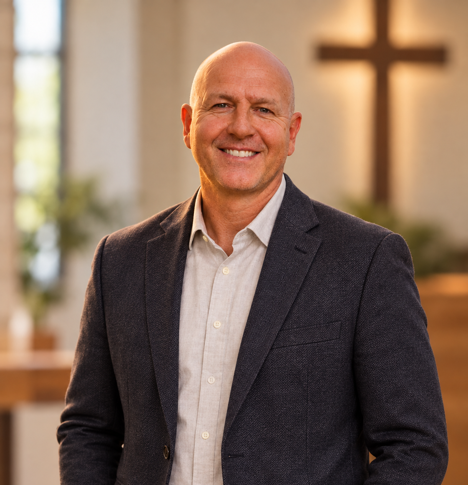

Петъчно богослужение
18:00
Време за молитва, Слово и общение.
Интернационална Християнска Църква – Кричим е място за вяра, молитва, поклонение и общение. Вратите ни са отворени за всеки.
Петък 18:00 · Неделя 10:00
Всеки е добре дошъл. Часовете могат да бъдат актуализирани в бъдеще според програмата на църквата.
Време за молитва, Слово и общение.
Събираме се като църковно семейство за поклонение и Божието Слово.

Нашето желание е църквата да бъде място, в което хората срещат Христос, растат във вярата и изграждат истинско християнско общение.
В момента църквата преминава през нов етап с изграждането на нова църковна сграда. След завършването ѝ тази страница ще бъде разширена със снимки, история, новини и повече информация за живота на църквата.
Ако посещавате за първи път, просто елате на някое от редовните богослужения.